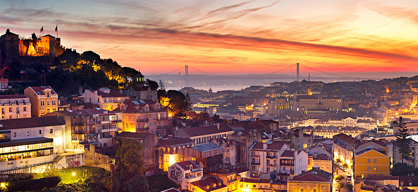

Descubra Lisboa
A capital portuguesa que combina história milenar, cultura vibrante e uma gastronomia única numa das cidades mais belas da Europa.



A capital portuguesa que combina história milenar, cultura vibrante e uma gastronomia única numa das cidades mais belas da Europa.
Lisboa é uma cidade incrível localizada na costa oeste de Portugal. É conhecida pelas suas colinas, elétricos antigos e monumentos históricos.
Este guia está dividido em três secções principais:
Os locais que não pode perder em Lisboa
Os melhores sabores da cidade
Dicas práticas para a sua viagem